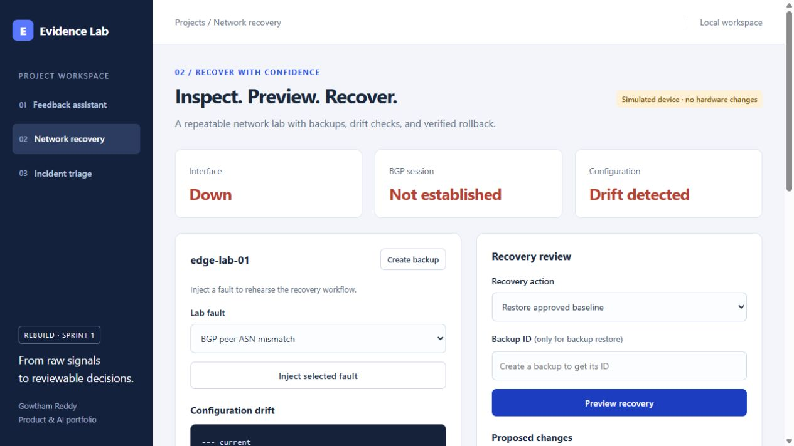

01
Feedback: from comments to reviewed themes
Trace themes back to comments, edit summaries, keep or reject each theme, and export only after review. Saved examples are labeled; optional live analysis sends masked input to OpenAI.

Applied AI · Network engineering
Three working projects in one workspace: source-linked feedback analysis, incident triage, and approval-gated recovery in a simulated network lab.
A shared lab for the three project case studies below. Saved examples are explicitly labeled and the network device is simulated. Recorded live evaluations date to September 29, 2026. This is a local rebuild, not a claim of production or customer impact.
Explore the screenshots, walkthrough and measured results below. The interactive application currently runs locally; contact me for a demonstration.

01 / Walkthrough
A sequence of workflows to explain the project.
01
Trace themes back to comments, edit summaries, keep or reject each theme, and export only after review. Saved examples are labeled; optional live analysis sends masked input to OpenAI.
02
Inspect drift in a simulated device, preview an allowlisted change, and approve the exact proposal. The engine includes retry limits, health checks, backups and rollback.

03
Connect logs, topology, runbooks and read-only checks. Review the hypothesis and its uncertainty before exporting. The assistant does not execute network commands.
02 / Engineering
Across feedback interpretation and network operations, a plausible answer is not enough. Evidence Lab joins three separate project workflows around traceable sources, explicit review, and controlled changes.
Built a shared browser workspace and Python backend for the three rebuilds, with validation, review gates, synthetic fixtures, tests, evaluation records, a demo protocol and monitoring adapters. Each component has its own case study and operating boundaries.
A plain HTML/CSS/JavaScript client talks to a loopback Python HTTP API. Feedback and triage share masking and structured-output validation around the OpenAI Responses API. Recovery runs through a separate local state engine. Monitoring exporters are optional companion processes.
Use transparent components and a small local runbook corpus. Keep saved demonstrations distinct from live inference, and synthetic measurements distinct from customer evidence. Separate source-reference validity from semantic accuracy. Require human review and state-bound approval where appropriate.
Saved September 29 evidence records 71 tests passed, 188/200 synthetic feedback-label matches, 20/20 synthetic incident-label matches, and 40 successful recoveries in 20 paired automated trials. Prompt and retrieval comparisons tied on small subsets. These establish behavior under the recorded conditions, not production effectiveness. The linked aggregate report preserves dates, denominators, dataset hashes and limitations.
Recorded live evaluations date to September 29, 2026; fresh API availability and billing were not retested for this portfolio update. Saved examples are hand-authored and labeled. Data and network devices are synthetic. No customer study, production performance, physical-device recovery, or public deployment is claimed. Source stays private. Ansible and remote CI execution remain unverified. Monitoring evidence is historical; optional monitoring services are not assumed to be running now. The broader incident behavior study remains a planned extension.
Explore the available project resources.